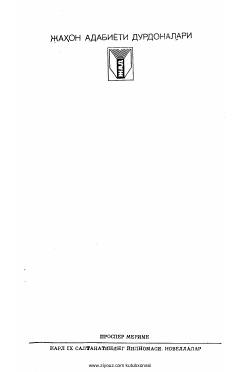

KIFransiya tarixidagi murakkab davrni tasvirlovchi tarixiy roman va novellalar to'plami.
Ushbu kitob fransuz yozuvchisi Prosper Merimening mashhur tarixiy romani hamda bir qator novellalarini o'z ichiga oladi. Asarda XVI asr Fransiya tarixi, xususan, Karl IX hukmronligi davridagi siyosiy va diniy ziddiyatlar badiiy talqin etilgan.